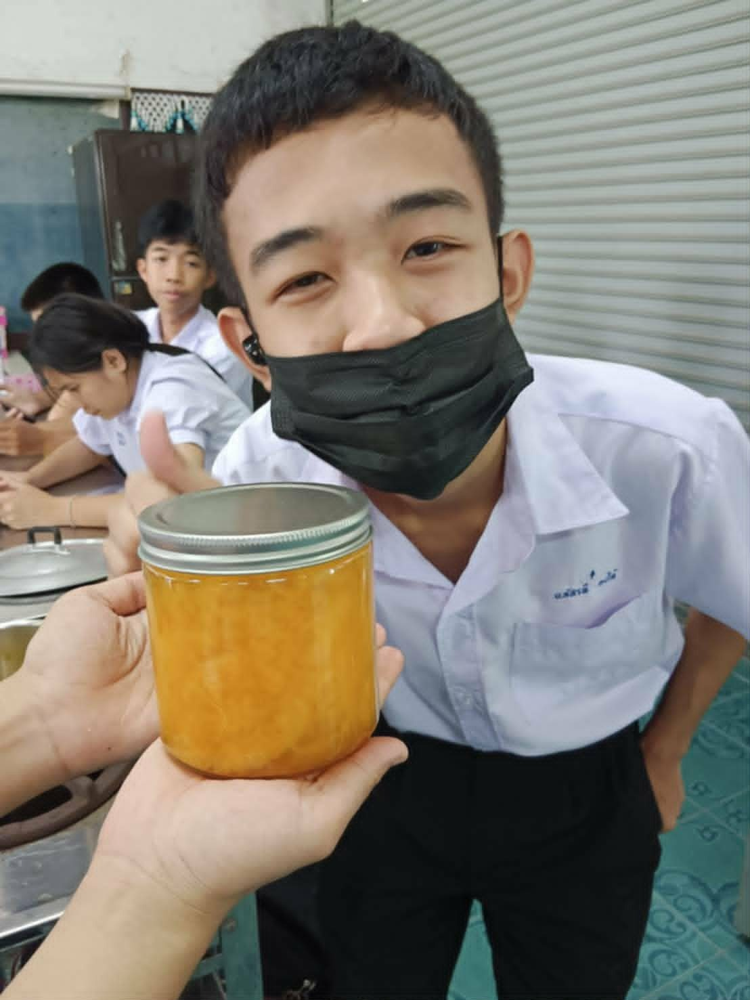

01 / ABOUT ME
ประวัติส่วนตัว
ข้อมูลส่วนตัว ความสามารถ ความสนใจ และเป้าหมายในอนาคต

สวัสดีครับ ผมชื่อ [นาย นภัสรพี คงได้]
ปัจจุบันกำลังศึกษาอยู่ระดับชั้นมัธยมศึกษาปีที่ 6 เป็นคนที่มีความสนใจในการเรียนรู้สิ่งใหม่ ๆ ชอบพัฒนาตนเอง และสนใจด้านเทคโนโลยี การออกแบบ และการสร้างผลงานต่าง ๆ
ชื่อเล่น:
[พี]
วันเกิด:
[18/01/2551]
ระดับการศึกษา:
มัธยมศึกษาปีที่ 6
จังหวัด:
[ชลบุรี]
ความสนใจ
เป้าหมายในอนาคต
เป้าหมายของผมคือการนำความรู้และประสบการณ์ ที่ได้รับจากการศึกษาไปพัฒนาต่อยอดในระดับมหาวิทยาลัย และสร้างผลงานที่สามารถนำไปใช้ได้จริง พร้อมพัฒนาทักษะของตนเองอย่างต่อเนื่อง